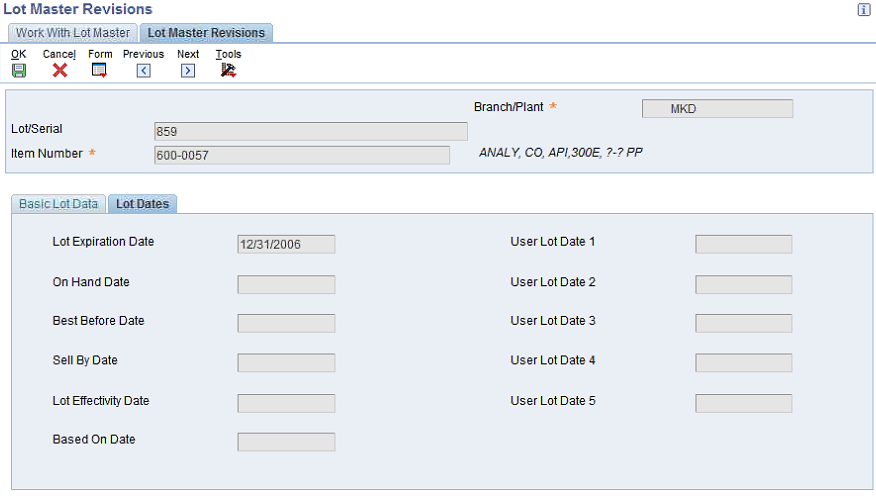
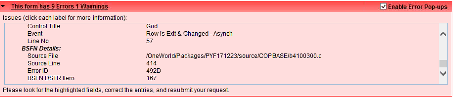

This document is to explain possible cause of the main issue - P4112/P4114 does not allow user to dispose the expired lots. This is a case study when Lot Master (F4108) are resulted from data migration (World Software to EnterpriseOne) or migration (from Xe/ERP8 to B9).
Question 1> How to dispose the item with expired lot from the Item Ledger?
Question 2> Why P4108 (Lot Master Revision) does not allow me to edit any lot dates?

Question 3> Why P4112/P4114 (Inventory Issue/Adjustment) issues hard error for any Inventory Transaction?

Error
Lot Expiration Date Incorrect
CAUSE . . . . . . . . . The Lot Expiration Date must be greater than or equal to the Lot Effective Date, On Hand Date (Transaction Date), and the Based On Date.
RESOLUTION . . . Enter a Lot Expiration Date that is greater than or equal to the Lot Effective Date, On Hand Date, and Based On Date.
ER Details:
Form P4112_W4112A
Control Id 1
Control Title Grid
Event Row is Exit & Changed - Asynch
Line No 96
BSFN Details:
Source File .../source/COPBASE/b4100300.c
Source Line 414
Error ID 492D
BSFN DSTR Item 167
Answer 1>
Commonly,
1. Update Lot Status (for instance 'E') using R41082 (Lot Status Update) in <Document 2094021.2> - E1: 41: Lot Processing and Serial Number Control when there are lots of expired lot. Or you can update lot status using P41024
2. Allow to issue by specifying the lot status updated above through processing option of P4112/P4114
3. Issue it.
Answer 2>
This issue is reported and fixed through <Bug 12878908> : LOT MASTER DATES NOT EDITABLE IN P4108.
Answer 3>
Note that all data are valid then the warning 4937 (Expiration Date less than todays date) is to be issued.
The date columns in F4108 (Lot Master) are not populated correctly for following reason,
- There is no migration routine from World Software to 9.0. unless the migration is performed like World Software > (migration) Xe (B7) > (conversion) B9.
- Or Data from migrated from World Software or migrated from B7 (Xe, and ERP8) shall not have dates populated. So to fix this issue, there is conversion batch R894108D (Conversion for F4108 from XE to ERP 9.0) to cover the change of table. For detail, refer to <Document 1467989.1> - E1: UPG: 41: Overview Of Upgrading Inventory Management Application Module From EnterpriseOne Xe to EnterpriseOne 9.x (9.0, 9.1 and 9.2) Application Release Levels.
<Document 1280385.1> - E1: 40: Location Validation and Lot Creation in Inventory Transaction may explain detail on the Lot Dates computation including error routine.
The validation for any inventory transactions are performed through the business function VerifyLotDateRanges (B4100300) as below,
when lot date (ohdj, bbdj, sbdj, dlej, bodj, u1dj, u2dj, u3dj, u4dj, u5dj ) are not populated against migrated/converted data.
In case you decide not to correct the data from F4108 and you are allowed to use query tool, you may update F4108.MMEJ which is greater than today's date.